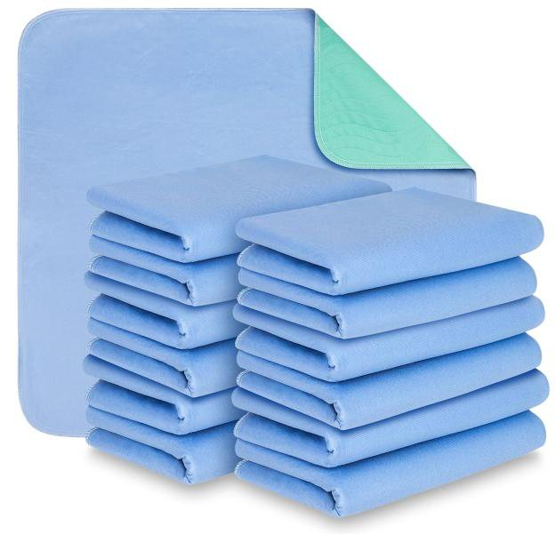
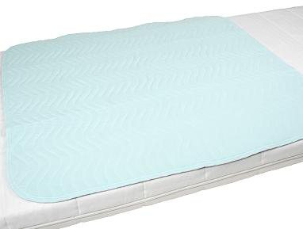
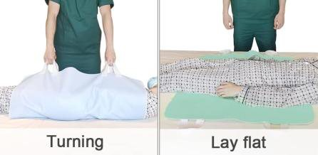
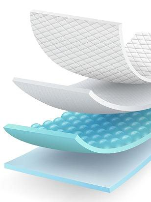
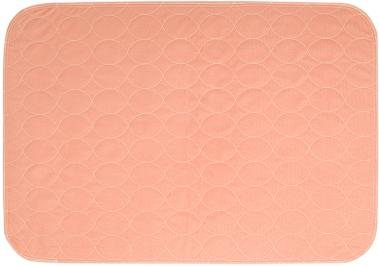

14
14我们供应的八种护理垫款式
每种款式都可做任何尺寸和颜色，配您的标签和包装。
14
58 59
59 60
60 61
61普通款
日常主力款。柔软磨毛涤纶面层和底布包裹针刺吸水芯和 TPU 防水层。颜色和尺寸都易于定制。
| 面层 | 柔软磨毛涤纶 90 g/m²（或棉） |
|---|---|
| 吸水芯 | 95% 涤纶 / 5% 粘胶 或 65% / 35%；200 / 230 / 270 / 340 g/m²；每张 34 × 36 in 垫约 200 / 300 / 400 ml（轻薄 / 标准 / 重型） |
| 防水层 | TPU 膜 0.025 mm，30 g/m²；可机洗 300 次以上 |
| 底层 | 柔软磨毛涤纶 90 g/m²，防滑 |
尺寸：18 × 24 in 至 72 × 72 in，40 × 60 cm 至 90 × 160 cm，或任意尺寸 · 颜色：8 种常备色、印花或 Pantone 定制
普通款详情页 15
15 65
65 66
66 67
67棉面 · PVC 底
适合喜欢棉质触感的用户。棉面层有四种克重，下面是柔软填充层和吸水层，防水 PVC 底由防滑针织布保护。
| 面层 | 亲肤棉，100 / 120 / 140 / 180 g/m² |
|---|---|
| 填充层 | 涤纶填充层 |
| 吸水芯 | 95% 涤纶 / 5% 粘胶 或 65% / 35%；200 / 230 / 270 / 340 g/m²；每张 34 × 36 in 垫约 200 / 300 / 400 ml（轻薄 / 标准 / 重型） |
| 防水底层 | PVC 加防滑针织布；可机洗 300 次以上 |
尺寸：18 × 24 in 至 72 × 72 in，40 × 60 cm 至 90 × 160 cm，或任意尺寸 · 颜色：8 种常备色、印花或 Pantone 定制
棉面 · PVC 底详情页 16
16 68
68竹纤维款
五层结构。竹纤维面层凉爽顺滑，一层喷胶棉增加柔软度，吸收芯、TPU 防水层和防滑底布负责防护。
| 面层 | 竹纤维面料，触感凉爽顺滑 |
|---|---|
| 喷胶棉 | 涤纶喷胶棉层 |
| 吸水芯 | 95% 涤纶 / 5% 粘胶 或 65% / 35%；200 / 230 / 270 / 340 g/m²；每张 34 × 36 in 垫约 200 / 300 / 400 ml（轻薄 / 标准 / 重型） |
| 防水层 | TPU 膜 0.025 mm，30 g/m²；可机洗 300 次以上 |
| 底层 | 柔软磨毛涤纶，防滑 |
尺寸：18 × 24 in 至 72 × 72 in，40 × 60 cm 至 90 × 160 cm，或任意尺寸 · 颜色：8 种常备色、印花或 Pantone 定制
竹纤维款详情页 17
17 70
70
71毛巾布款
毛巾圈把液体从皮肤导入芯层。毛巾布面层下依次是喷胶棉层、吸收芯、TPU 防水层和防污防滑底布。
| 面层 | 毛巾布（毛圈） |
|---|---|
| 喷胶棉 | 涤纶喷胶棉层 |
| 吸水芯 | 95% 涤纶 / 5% 粘胶 或 65% / 35%；200 / 230 / 270 / 340 g/m²；每张 34 × 36 in 垫约 200 / 300 / 400 ml（轻薄 / 标准 / 重型） |
| 防水层 | TPU 膜 0.025 mm，30 g/m²；可机洗 300 次以上 |
| 底层 | 柔软磨毛涤纶，防滑 |
尺寸：18 × 24 in 至 72 × 72 in，40 × 60 cm 至 90 × 160 cm，或任意尺寸 · 颜色：8 种常备色、印花或 Pantone 定制
毛巾布款详情页 18
18 72
72 73
73 74
74 75
75塞入式
专为睡不安稳和卧床护理设计。中间绗缝部分吸水；两侧长翼片塞到床垫下，垫子不会滑动或起皱。
| 面层 | 柔软磨毛涤纶 90 g/m²（或棉） |
|---|---|
| 吸水芯 | 95% 涤纶 / 5% 粘胶 或 65% / 35%；200 / 230 / 270 / 340 g/m²；每张 34 × 36 in 垫约 200 / 300 / 400 ml（轻薄 / 标准 / 重型） |
| 防水层 | TPU 膜 0.025 mm，30 g/m²；可机洗 300 次以上 |
| 底层 | 柔软磨毛涤纶 90 g/m²，防滑 |
尺寸：18 × 24 in 至 72 × 72 in，40 × 60 cm 至 90 × 160 cm，或任意尺寸 · 颜色：8 种常备色、印花或 Pantone 定制
塞入式详情页 19
19
77 78
78 79
79 80
80提手款
兼作移位辅助工具的护理垫。加固提手让两名护理人员抬起、挪位和翻身；之后垫子平铺，照常保护床铺。
| 面层 | 柔软磨毛涤纶 90 g/m²（或棉） |
|---|---|
| 吸水芯 | 95% 涤纶 / 5% 粘胶 或 65% / 35%；200 / 230 / 270 / 340 g/m²；每张 34 × 36 in 垫约 200 / 300 / 400 ml（轻薄 / 标准 / 重型） |
| 防水层 | TPU 膜 0.025 mm，30 g/m²；可机洗 300 次以上 |
| 底层 | 柔软磨毛涤纶 90 g/m²，防滑 |
尺寸：18 × 24 in 至 72 × 72 in，40 × 60 cm 至 90 × 160 cm，或任意尺寸 · 颜色：8 种常备色、印花或 Pantone 定制
提手款详情页 20
20 81
81 82
82 83
83 84
84PVC 底款
大批量采购的高性价比之选。磨毛涤纶或棉面层和吸收芯铺在完全防水的 PVC 防水层上，底面为防滑、抗起球针织布。
| 面层 | 柔软磨毛涤纶或棉 |
|---|---|
| 吸水芯 | 95% 涤纶 / 5% 粘胶 或 65% / 35%；200 / 230 / 270 / 340 g/m²；每张 34 × 36 in 垫约 200 / 300 / 400 ml（轻薄 / 标准 / 重型） |
| 防水层 | PVC；可机洗 300 次以上 |
| 底层 | 针织布，防滑抗起球 |
尺寸：18 × 24 in 至 72 × 72 in，40 × 60 cm 至 90 × 160 cm，或任意尺寸 · 颜色：8 种常备色、印花或 Pantone 定制
PVC 底款详情页 21
21 85
85 8661
8661速干款（Swift Dry）
适合高周转的洗涤方案。毛圈布面层搭配 340 g/m² 厚芯层（每张 34 × 36 in 垫约 400 ml）。渗透时间和干燥时间按订单实测，写在检测报告上。
| 面层 | 毛圈布 150 g/m² |
|---|---|
| 吸水芯 | 65% 涤纶 / 35% 粘胶，340 g/m²；每张 34 × 36 in 垫约 400 ml |
| 防水层 | TPU 膜 0.025 mm，30 g/m²；可机洗 300 次以上 |
| 底层 | 柔软磨毛涤纶 90 g/m²，防滑 |
尺寸：18 × 24 in 至 72 × 72 in，40 × 60 cm 至 90 × 160 cm，或任意尺寸 · 颜色：8 种常备色、印花或 Pantone 定制
速干款详情页四层结构，各司其职
所有款式都采用同一层结构，每一层的材料都可选择。
 76
76 5784
5784
64 69
69逐层解析
| 1 · 绗缝面层 | 磨毛涤纶 90 g/m² · 棉 100–180 g/m² · 竹纤维 · 毛巾布 · 毛圈布 150 g/m² |
|---|---|
| 2 · 吸收芯 | 针刺涤纶 / 粘胶（95/5 或 65/35）· 200 / 230 / 270 / 340 g/m² |
| 吸水量 | 每张 34 × 36 in 垫约 200 / 300 / 400 ml（轻薄 / 标准 / 重型）；测试方法见“吸水性”页 |
| 3 · 防水层 | TPU 膜 0.025 mm，30 g/m²，透气静音 · 或 PVC |
| 4 · 底布 | 磨毛涤纶 90 g/m²，防滑 · 或抗起球针织布 |
| 可选 | 加一层喷胶棉（五层结构），重度使用可加第二层芯 |
| 包边 | 斜纹包边，双针缝制，圆角 |
| 耐用性 | 可机洗 300 次以上；另有 95 °C 机构款 |
颜色、印花、绗缝、提手和翼片
面层和底布颜色可分别选择。
 26
26 27
27 28
28 29
29
30 31
31 32
32 33
338 种常备颜色
白、浅薄荷绿、绿、浅蓝、桃色、棕、藏青和灰，均为现货面料。双色款（例如白色面层配蓝色底布）为标准做法。
| 现货颜色 | 每个尺寸 500 片起 |
|---|---|
| 定制颜色 | 任何 Pantone TCX 颜色，每个 SKU 1,000 片起 |
| 双色 | 面层与底布不同颜色 |
 88
88 89
89 90
90 91
91 92
92 93
93 94
94 102
102印花款
格纹和深色适合成人和宠物，耐脏；活泼印花适合儿童和婴儿房。也可把您的图案印在面层上。
 87
8712 种绗缝花型
波浪、菱形、直条、洋葱、鱼鳞等花型，或定制 Logo 绗缝。绗缝让芯层洗几百次仍不移位，并把液体分散到更大面积。
7978 9680
9680用于抬起和翻身的提手
加固提手让护理垫成为移位辅助工具：两名护理人员可抬起、挪位和翻身，之后垫子平铺，照常保护床铺。
| 提手 | 每张 4、6 或 8 个 |
|---|---|
| 常用尺寸 | 34 × 52 in（86 × 132 cm）配 8 个提手；34 × 36 in 配 4 个 |
| 适用款式 | 提手款 VC-PH01、棉面 VC-PC01、PVC 底 VC-PVC01 |
| 用途 | 医院、养老院、居家护理床 |
187267塞边翅膀
两侧长翼片塞到床垫下，垫子不会滑动或起皱：这是睡不安稳和卧床护理用户最需要的功能。
| 翼片 | 2 片翼片，46 × 86 cm（18 × 34 in） |
|---|---|
| 常用尺寸 | 中间部分 34 × 36 in 或 34 × 52 in |
| 适用款式 | 塞入式 VC-PF01、竹纤维 VC-PB01、棉面 VC-PC01 |
19 种标准尺寸，或任意尺寸
北美用英寸，欧洲和日本用厘米。尺寸公差 ±2 cm。
66标准尺寸
英寸：18 × 24 · 24 × 36 · 30 × 36 · 34 × 36 · 34 × 52 · 34 × 60 · 36 × 60 · 34 × 76 · 36 × 72 · 72 × 72
厘米：40 × 60 · 60 × 90 · 70 × 90 · 75 × 90 · 75 × 100 · 90 × 160
其他尺寸按订单生产。
零售装 1、2、3 或 4 片，或护理机构用散装。
含用途和包装的完整尺寸表| 款式 | 展开尺寸 | 典型用途 | 零售包装 |
|---|---|---|---|
| 座椅 / 婴儿 | 18 × 24 in | 换尿布垫、婴儿餐椅、汽车座椅、轮椅、宠物笼（四层结构） | 3 |
| 轮椅 / 沙发 | 24 × 36 in | 躺椅、沙发坐垫、轮椅、婴儿床 | 2 / 4 |
| 座椅 / 单人床 | 30 × 36 in | 单人床臀部位置、沙发座面 | 2 / 4 |
| 护理床 / 单人床 | 34 × 36 in | 最受欢迎的零售尺寸；床用（垫在臀部下） | 2 / 4 |
| 床用 · 加长 | 34 × 52 in | 从肩膀覆盖到膝盖 | 1 / 2 |
| 床用 · 特长 | 34 × 60 in | 睡不安稳的人，覆盖整张床垫宽度（单人床） | 2 |
| 床用 · 加宽 | 36 × 60 in | 双人床 / 大床、两人同睡、大型犬 | 2 |
| 床用 · 全长 | 34 × 76 in | 单人床 / 护理床床垫从头到脚全覆盖；卧床护理 | 1 |
| 床 — 全长加宽 | 36 × 72 in | 从头到脚覆盖，单人床和护理床 | 1 |
| 床 — 全宽 | 72 × 72 in | 双人床 / 大床，全宽 | 1 |
| 带翅膀 · 标准 | 34 × 36 in + 2 个翅膀 18 × 34 in | 翅膀塞到床垫下，垫子不移位 | 2 |
| 带翅膀 · 加长 | 34 × 52 in + 2 个翅膀 18 × 34 in | 覆盖更长并带翅膀；适合失智和睡不安稳的人 | 2 |
| 公制 — 小 | 15.7 × 23.6 in | 尿布台垫、宠物笼、汽车座椅 | 3 |
| 公制 — 中 | 23.6 × 35.4 in | 婴儿床、椅子、沙发座面 | 2 |
| 公制 — 床用 | 27.6 × 35.4 in | 单人床臀部位置 | 2 |
| 欧盟尺寸 | 29.5 × 35.4 in | 德国 / 欧盟护理辅具标准尺寸 | 1 / 2 |
| 公制 — 加长 | 29.5 × 39.4 in | 护理床，覆盖更长 | 1 / 2 |
| 日本半幅 | 35.4 × 23.6 in | 日本介護用防水シーツ半幅尺寸 | 1 / 2 |
| 公制 — 全长 | 35.4 × 63 in | 护理床，几乎从头到脚 | 1 |
| 定制 | 任意尺寸 | 按订单生产 | 定制 |
成人防水围兜
 100
100五种款式，VC-BIB01 至 VC-BIB05
| VC-BIB01 | 格纹，三种配色 |
|---|---|
| VC-BIB02 | 蓝白格纹 |
| VC-BIB03 | 藏青格纹 |
| VC-BIB04 | 浅蓝格纹 |
| VC-BIB05 | 蓝色毛巾布 |
可机洗，外观得体、适合成人。自有品牌可定制面料、印花和扣合方式。养老院和居家护理零售商常与护理垫一起采购。
准备打造您的可水洗护理垫产品线了吗？
告诉我们您的目标市场、尺寸和数量。我们将在一个工作日内回复规格书和阶梯报价。